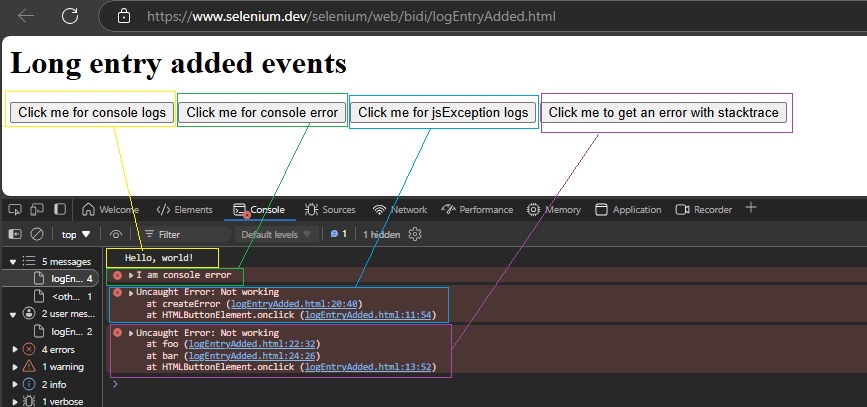

Console Logs / Error / Strace and Javascript Error Tracking on Modern Web Apps
Console Log entered by application
Test Case > Can be used to check if anything sensitive information write to browseer logs
Application Error Message in the Cosole
Javascript Error
Stack Trace
